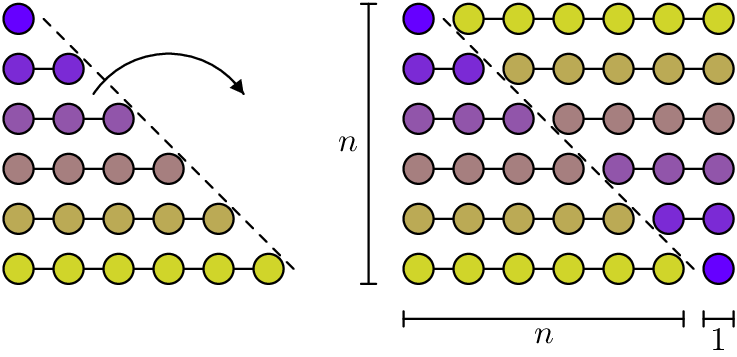

Induction
Suppose you have a matemathical sentence P(n) depending on a parameter n which is a natural number. To prove that for every n\in \mathbb{N} the sentence P(n) holds, one way is to use Induction on n, that is prove the following two facts
- Base case
- show that P(0) is true. (Sometimes the base case is P(\ell) for some natural number \ell, then, in this case, the induction will prove P(n) to be true for every n\geq \ell.)
- Inductive Step
- show that for a generic k\in \mathbb{N}, if P(k) is true, then also P(k+1) is true.
- Induction is always on some parameter (some natural number, the depth of a tree, …).
- Usually proving the Base Case of the induction should be trivial, if this is not the case, perhaps induction is not the right approach.
- Induction is a technique to prove that something is true, but in general not a way to discover that something is true.
There are a lot of different ways to prove that \sum_{i=0}^n i = n(n+1)/2. For instance a visual “proof” could be based on the following picture:

By induction, the argument would be as follows.
Let P(n) be the sentence \sum_{i=0}^n i = n(n+1)/2. To show that P(n) is true for every n\in \mathbb N by Induction on n it suffices to show the Base Case and the Inductive Step.
- Base Case
- P(0) is the sentence \sum_{i=0}^0 i=0(0+1)/2 which is trivially true, since both sides of the equality are 0.
- Inductive Step
- assuming P(k) to be true for a generic natural number k, that is \sum_{i=0}^k i = k(k+1)/2, we need to show that P(k+1) is also true, that is \sum_{i=0}^{k+1} i = (k+1)(k+2)/2: \begin{align*} \sum_{i=0}^{k+1} i &= \sum_{i=0}^k i + (k+1) \\ &\stackrel{I.H.}{=} \frac{k(k+1)}{2}+(k+1) \\ &=\frac{k(k+1)+2(k+1)}{2} \\ &=\frac{(k+1)(k+2)}{2}\ . \end{align*}
In the equality marked with I.H. we used the Inductive Hypothesis, i.e. the fact we are working under the assumption that P(k) is true.
If for whatever reason we suspect \sum_{i=0}^n i to be a polynomial in n of degree 2, say an^2+bn+c then we can substitute values for n and find candidates values for a,b,c.
For n=0, \sum_{i=0}^0 i=0=a\cdot 0^2+b \cdot 0 +c, that is c=0.
For n=1, \sum_{i=0}^1 i=1=a\cdot 1^2+b\cdot 1 (we are already using c=0).
For n=2, \sum_{i=0}^2 i=3 = a\cdot 2^2 +b\cdot 2.
That is we have that \begin{matrix} a+b &= 1\\ 4a+2b &= 3 \end{matrix} which gives the solution a=b=\frac{1}{2}. That is we suspect that \sum_{i=0}^n i = n(n+1)/2, but the argument above is not a proof. We need to prove it formally in some way, by induction for instance.